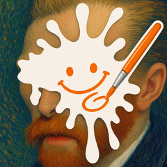

RePaint · 리페인트: 명화복원
White ink spilled on famous paintings. Restore them with your own brush.
하얀 잉크에 지워진 명화를, 내 붓으로 마음대로 되살려요.
- 32 public-domain masterpieces (Monet, Van Gogh, Renoir, Seurat, Hokusai…) / 모네·고흐·르누아르·쇠라·호쿠사이 등 명화 32점
- Pen, brush, crayon, eraser, fill, eyedropper, magnifier / 펜·붓·크레용·지우개·채우기·스포이드·확대창
- No score, no right answer — your painting is the answer / 점수도 정답도 없어요
- Collect your restorations and save them to Photos / 완성작 모으기, 사진 앱에 저장
iPhone · Support 고객 지원 · Privacy 개인정보 처리방침
© 2026 Seo DaeGyu